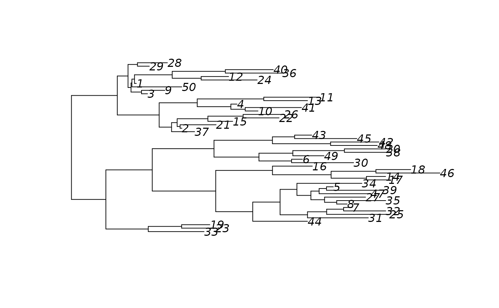

An alternative to ape::rtree. This function was written in C++ and is
significantly faster than rtree.
sim_tree(n, edge.length = stats::runif)Integer scalar. Number of leaf nodes.
A Function. Used to set the length of the edges.
An object of class ape::phylo with the edgelist as a postorderd,
node.label and edge.length.
The algorithm was implemented as follows
Initialize N = {1, ..., n}, E to be empty,
k = 2*n - 1
While length(N) != 1 do:
Randomly choose a pair (i, j) from N
Add the edges E = E U {(k, i), (k, j)},
Redefine N = (N \ {i, j}) U {k}
Set k = k - 1
next
Use edge.length(2*n - 1) (simulating branch lengths).
# A very simple example ----------------------------------------------------
set.seed(1223)
newtree <- sim_tree(50)
plot(newtree)

# A performance benchmark with ape::rtree ----------------------------------
if (FALSE) {
library(ape)
microbenchmark::microbenchmark(
ape = rtree(1e3),
phy = sim_tree(1e3),
unit = "relative"
)
# This is what you would get.
# Unit: relative
# expr min lq mean median uq max neval
# ape 14.7598 14.30809 14.30013 16.7217 14.32843 4.754106 100
# phy 1.0000 1.00000 1.00000 1.0000 1.00000 1.000000 100
}